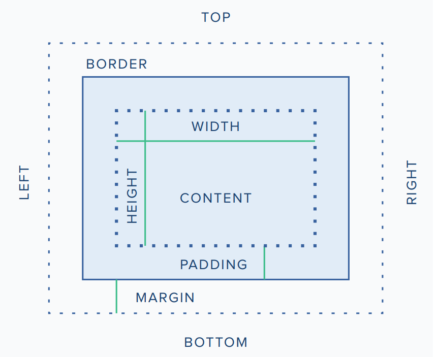

<head> </head> - znacznik sekcji nagłówkowej, tutaj wpisujemy informacje o stronie, dołączamy inne pliki, dodajemy słowa kluczowe, sposób wyświetlania strony i inne
<!DOCTYPE html> - określa jaki to jest typ dokumentu, wymagany zgodnie z HTML5
<html> </html> - określa początek i koniec dokumentu html
<html lang="pl"> - określa w jakim języku została napisana strona, pomaga w przypadku tłumaczenia strony na inne języki za pomocą przeglądarki
<meta charset="UTF-8"> - określa kodowanie znaków na stronie, UTF-8 zapewnia kodowanie polskich znaków
<meta name="viewport" content="width=device-width, initial-scale=1.0"> - ustalenie rozmiaru strony do urządzenia - responsywność <body> </body> - zawartośc strony, to co się wyświetla w przeglądarce
Znaczniki blokowe strony, semantyczny podział strony
<header></header> - znacznik bloku banera, nagłówkowego, zgodny z html5<section></section> - znacznik blokowy ogólnego przeznaczenia, uniwersalny, zazwyczaj dodajemy do niego klasę lub id, zgodny html5
<footer></footer> - znacznik blokowy stopki, zgodny z html5, można tutaj wprowadzać np dane kontaktowe, informacje prawne dotyczące strony
<main></main> - znacznik blokowy sekcji, określa główną częśc strony, zgodny z html5
<aside></aside> - znacznik blokowy sekcji, zgodny z html5, dotyczny bloku który jest z boku strony
<article></article> - znacznik blokowy strony, zgodny z html5, dotyczny np jakieś artykułu, wzmianki na stronie
<nav></nav> - znacznik blokowy dotyczący nawigacji strony, zgodny z html5
<p></p> - znacznik akapitu, paragrafu - fragment tekstu
Znaczniki nagłówka
<h1></h1> - znacznik nagłówka, teksu bardziej istotnego. Dostępne są poziomy od 1 do 6Znaczniki ciała strony
<hr> - linia horyzontalna, linia pozioma na stronie, słuy do rozdzielania tekstu itp.<br> - znacznik nowej linii, w starszych wersjach html można go spotkać z ukośnikiem na końcu
<em></em>
< > podkreślenie, uwypuklenie, zastowany w html5, oprócz wyglądu informuje o ważności tekstu
<i></i> - italic czyli pochylenie. Tylko zmienia wygląd tekstu. Został zastąpiony w html5 przez znacznik <em>
<b></b> - bold, teskt pogrubiony bez dodatkowego znacznia, został zastiony w HTML5 przez znacznik <strong>
<strong></strong> - tekst o większym znaczeniu i pogrubiony
Listy w HTML
<ol></ol> - początek i koniec listy uporządkowanej (ma numery pozycji)<ul></ul> - początek i koniec listy nieuporządkowanej
<li></li> - element składowy listy - jedno jej wystąpienie
<dl><dl> - początek i koniec listy definicji
<dd><dd> - definicję z listy definicji
Typy list dopisujemy to w znaczniku listy - ul lub ol
type="1" - ponumerowane liczbami arabskimitype="A" - ponumerowane wielkimi literami
type="a" - ponumerowane lmałymi literami
type="I" - ponumerowane dużymy cyframi rzymskimi
type="i" - ponumerowane małymi cyframi rzymskimi
Tabele
<table></table>-znacznik otwierający i zamykający tabelę<tr></tr> - wiersz tabeli
<td></td> -komórka tabeli
<thead></thead> - znacznik sekcji nagłówka tabeli
<tbody></tbody> - znacznik sekcji zawartości tabeli
<th></th> - znacznik komórki nagłówkowej
<caption></caption> - znacznik tytułu tabeli, ma być między znacznikami table
border: - selektor CSS określający obramowanie, przyjmuje maksymalnie 3 parametry. Pierwszy parametr określa szerokość linii(lub użyć border-width), drugi parametr określa styl lini (border-style), trzeci parametr określa kolor linii (border-color)
border-collapse - określa jak zachowuje się obramowanie jak jest obo innego obramowania. Separate - pokazywane są oba obramowania, collapse - pokazywane jest jako jedno obramowanie
rowspan="2"-połączenie dwóch wierszy ze sobą
colspan="2"-połączenie dwóch kolumn ze sobą
padding-margenise wewnętrz, można wykorzystać to wewnątrz komórek tabeli
text-align - wyrównanie tekstu
Obrazy
<img src="lokalizacja obrazu"> - znacznik wstawiania obrazu na stronę, w parametrze src należy podać adres obrazu lub link do niego<figure></figure> -znacznik określający obszar zdjęcia razem z tytułem. wewnątrz tych znaczników będą img i figcaption
<figcaption></figcaption> - opis/ podpis zdjęcia
Atrybuty dla znacznika img:
src lokalicja zdjeciawidth - szerokośc zdjecia
height - wysokość obrazu
alt - tekst alternatywny pojawiający się w momecie gdy nie można wyświetlić zdjęcia
title - tekst pojawiający się po najechaniu na zdjęcie
Odsyłacze
<a href="adres"></a> - odnośnik, hiperłącze do innego miejsca lub strony, można nim obudować inne blokitarget="" - ustala w jaki sposób otwiera się hiperłącze. _blank - otwiera w nowe karcie, _self - otworzy się w tej samej karcie, ustawione domyślnie, _parent - otwiera się w ramce rodzica, _top - otaworzy na całej stronie
<a name="adres"></a> - odnośnik, hiperłącze do innego miejsca na tej stronie - przewijanie strony. Aby to działało musi być na stronie element z id podanym jako "adres"
<map name=""></map> - początek mapy odsylaczy. Możemy określić nie tylko konkretny element ale także jego fragment np. część zdjęcia. Wewnątrz tego znacznika będzie znajdował się znacznik area
<area></area> -znacznik określający odnośnik mapy. Może zawierać parametry shape - kształ, coords - kordynaty, inaczej współrzędne, href - adres odnośnika, alt - tekst alternatywny

Formularze
<form></form> rozpoczyna i kończy zakres formularz, zgrupować dane przesyłane<form action=""></form> przesyłanie danych w formularz do miejsca określonego w parametrze action
<form method=""></form> - sposób przesyałania danych w formularzu. występują dwie opcje GET i POST. Metoda GET przesyła dane jawnym tekstem, Metoda POST przesyła ukrytem tekstem, bezpiecznie. Domyślnie wybieran metoda GET
<input type=""></input> pole do wprowadzania danych. Może przyjmować następujące typy:
- "text" - tekst, "number" - liczby, pole ma suwak do zmiany wartości,
- "date" - do przechowywania daty, ma przycisk do rozwinięcia kalendarza,
- "submit" - przycisk zatwierdzenia formularza, przesyła dane wprowadzane w formularzu;
- "checkbox" - przycisk, kótry możemy zaznaczyć, przechowuje wartości prawda/fałsz, może występować niezależnie od innych,
- "radio" - pole opcji, opcje wyboru - występuje zazwyczaj w grupie kilku elementów i pozwala na zaznaczenie tylko jednej opcji z dostępny;
- "password" - pozwala na wpisanie hasła, nie widać wpisywanych znaków - są za to kropki;
- "file" - do przesyłania plików;
- "reset" - pozwala na wyczyszczenie formularza;
- "hidden" - ukryta kontrolka;
- "button" - przycisk w formularzu, zazwyczaj wykorzystywany do uruchamiania innych programów np. javaScript
- "color" - pole do wybierania koloru
- "e-mail" - pole do wprowadzania adresu e-mail
<input type="text" id="imie" name="imie"></input> parametr name jest wymagany gdy przesyłamy dane przez formularza, pozwala to na odpowiednie odczytanie danych
<input type="text" id="imie" value="imie"></input> parametr value określa wartość przypisaną do tego pola input - ta wartość nie zawsze musi być wyświetlane
<input type="text" id="imie" size=10></input> parametr size określa maksymalną ilość znaków
<input type="text" id="imie" maxlength=8></input> maxlength - określa maksymalną ilość znaków w polu, minlength - określa minimalną wartość znaków, stosuje sie przy walidacji danych w formularzu
<button></button> przycisk, można do niego przypisać różne działania, jak również tye="submit" - wtedy prześle formularz
<label for=""></label> - etykieta dla pola w formularzu. W atrybucie for podajemy nazwę id pola ona dotyczy
<fieldset></fieldset> - grupowanie elementów formularza, zazwyczaj wyglada to jak obeamowanie dookoło elementów
<legend></legend> - Tytuł grupy elementów, który musi występować ze znacznikiem fieldset
<select name=""></select> Lista wyboru, pole formularza, które pozwala na wybranie jednej wartości z dostepnej listy. Atrybut "multiple" pozwala na zaznaczenie wielu elementów listy. Atrybut size="" określa ile naraz jest wyświetlanyc elementów. Lista wyboru zawsze występuje wraz ze znacznikiem option w którym podajemy elementy do wyboru
<option ></option> element listy, który możemy wybrać. Powinno zawierać zawierać atrybut "value" który będzie określał wartość tego wyboru.
<optiongroup></optiongroup> pozwala na grupowanie elementów
<textarea></textarea> pozwala na wprowadzenie większej ilości tekstu. Może pryjmować parametry name - nazwa, rows - ilośc wierszy, cols - ilość znaków w wierszu
disabled - parametr dla elemntu formularza, który ma nie być dostępny dla użytkownika ale ma być widoczny
readonly - parametr pozwala na wyświetlenie elementu formularza bez możliwości zmiany danych
accesskey paramter umożliwiający przypisanie skrótu klawiszowego do wybranej opcji
<datalist></datalist> służy do zdefiniowania wartości dostępnych dla pola input, które będą podpowiadane dla tego pola. w znaczniku input musi znaleść się atrybut list z nazwą listy
<input type="text" autofocus ></input> Przeniesie zaznaczenie automatycznie po załadowaniu stronu w poden miejsce
<input type="text" autocomplete></input> można ustawić aby nie wpisywały się automatycznie zapisane wsześniej dane
<input type="text" required></input> to pole jest obowiązkowe, nie prześle danych przez formularz dopóki tego nie uzupełnimy
<input type="text" pattern="[0-9]{2}"></input>
Multimedia
<video controls></video> określa początek i koniec bloku w którym zostanie umieszczone wideo. Można dodać wysokość tego elementu, szerokość oraz przyciski do nawigowania filme - controls<source src="" type="video/mp4">znacznik określający lokalizacje pliku multimedialnego oraz typu danych jakie przechowuje.
tekst wyświetlany gdy nie można wyświetlić wideo W przypadku gdy nie można wyświetlić wideo poniżej znacznika source ale między znacznikami video wpisujemy tekst, który ma się wyświetlić
<audio controls></audio> blok zawierający plik dźwięk
<source src="" type="audio/ogg">znacznik określający lokalizacje pliku multimedialnego oraz typu danych jakie przechowuje.
tekst wyświetlany gdy nie można odtworzyć audio W przypadku gdy nie można wyświetlić audio poniżej znacznika source ale między znacznikami video wpisujemy tekst, który ma się wyświetlić
<canvas><canvas> - blok służący do rysowania, tworzenia rysunków, obrazów, wykresów np. z wykorzystanie javascript
<embed src=""> dodaje zewnątrzną aplikacje do strony www
<object data=""><> dodaje zewnątrzny obiekt taki jak aplet Javy, czytnik PDF, inną stronę www itp.
Zdarzenia - wykorzystywane np. w javaSricpt
- onclick="funkcja1()" zadziała gdy klikniemy myszą
- ondbclick zadziała jak podwójnie klikniemy
- onmousedown zadziała gdy naciśniemy przycisk myszy
- onmouseup zadziała gdy puścimy klawisz myszy
- onmouseover zadziała gdy myszka pojawi się w tym miejscu
- onmousemove zadziała gdy myszka kursor zostnie przesunięty w tym elemencie
- onmouseout zadziała gdy kursor opuści element
- onkeypress zadziała gdy zostanie przyciśnienty i zwolniony klawisz na klawiaturze
- onkeydown zadziała gdy klawisz jest wciśniety
- onkeyup zadziała gdy klawisz zostanie puszczony
- onfocus zadziała gdy został wybrany konkretny element formularza
- onblur zadziałą gdy kursor opuści element
- onselect zadziałą w momencie gdy zaznaczym tekst w polu tekstowym
- onchange zadziała gdy w polu zmieni sie wartość
- onsubmit w momencie wysłania formularza
- onreset w momencie zresetowania formularza
- onload w momencie wczytania dokumentu
- unload w momencie gdy dokument nie został wczytany
<><>